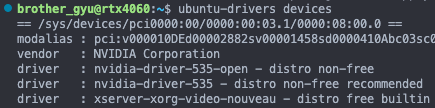
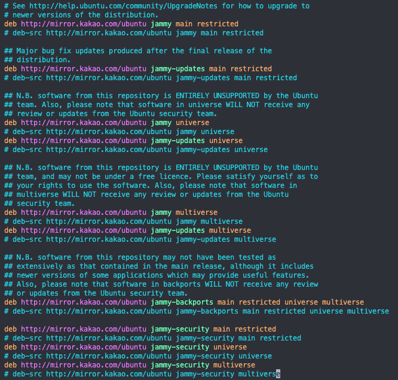
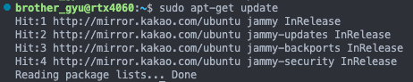
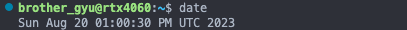
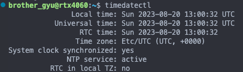
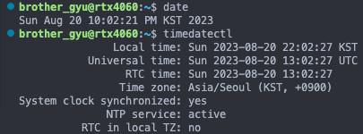

[Setting] Ubuntu Server 22.04.3 LTS 초기 설정
[Setting] Ubuntu Server 22.04.3 LTS 초기 설정
Ubuntu Server 설치
-
Reference
[Linux] 우분투 Ubuntu server 설치 - https://servermon.tistory.com/268
[[Linux] Ubuntu 20.04 server 설치 과정 - https://heroeswillnotdie.tistory.com/22
두 개의 블로그를 참고하여 설치 - Rufus 유틸을 사용해서 USB 드라이브 만들었습니다
ubuntu-drivers 설치
-
1. devices 확인
ubuntu-drivers devices
만약 aplay 관련 error나 warning이 발생했을 때:
# aplay가 존재하는지 확인 which aplay # /usr/bin/aplay가 없을 경우 설치 sudo apt-get install alsa-utils -
2. drivers autoinstall
sudo ubuntu-drivers autoinstall명령은 Ubuntu에서 사용되는 명령어로, 시스템에 설치된 하드웨어에 가장 잘 맞는 드라이버들을 자동으로 탐지하고 설치하는 기능을 수행자세한 기능 설명은 다음과 같습니다:
- 자동 탐지:
ubuntu-drivers도구는 현재 시스템에 연결된 하드웨어 (특히 그래픽 카드, 네트워크 카드, 사운드 카드 등)를 검사하여 해당 하드웨어에 최적화된 드라이버가 무엇인지 탐지 - 추천 드라이버 설치:
autoinstall옵션을 사용하면, 시스템에 가장 잘 맞는 드라이버를 자동으로 선택하고 설치
예를 들어, NVIDIA 그래픽 카드가 있는 경우, 가장 적절한 NVIDIA 드라이버 버전을 자동으로 선택하여 설치합니다. - 의존성 관리: 드라이버를 설치할 때 필요한 의존성 패키지들도 자동으로 함께 설치
- 커널 모듈 및 서비스 관리: 드라이버 설치 후 필요한 커널 모듈이나 관련 서비스가 있다면, 이를 자동으로 로드하거나 시작
sudo ubuntu-drivers autoinstall - 자동 탐지:
(선택) apt 저장소 변경
설치 과정에서 Configure Ubuntu crchive mirror 페이지에서 별도로 주소를 설정하지 않았다면 kr.archive.ubuntu.com로 되어 있을 수 있다
mirror.kakao.com으로 변경하면 좀 더 빠르게 apt 설치를 할 수 있다
sudo vi /etc/apt/sources.list
:%s/kr.archive.ubuntu.com/mirror.kakao.com/
vi 문자열 변경 기능 사용 - 변경후 :wq [저장 후 나가기]

-
변경 확인
sudo apt-get update
시스템 시간 변경
Ubuntu Server를 설치 할 때 English로 설치하면서 한국시간이 아닌 다른 나라 시간으로 잡혀있을 때 설정
-
1. 현재 시스템의 날짜 및 시간 정보 확인:
date
timedatectl
-
2. 시간대를 한국 시간으로 설정:
sudo timedatectl set-timezone Asia/Seoul -
3. 변경 사항 확인:

댓글남기기